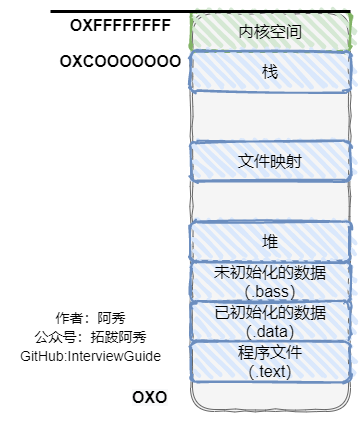
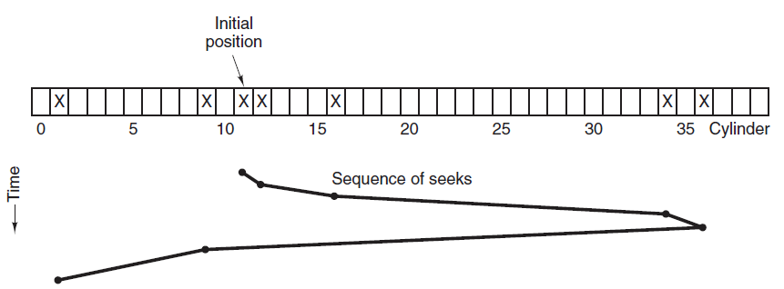
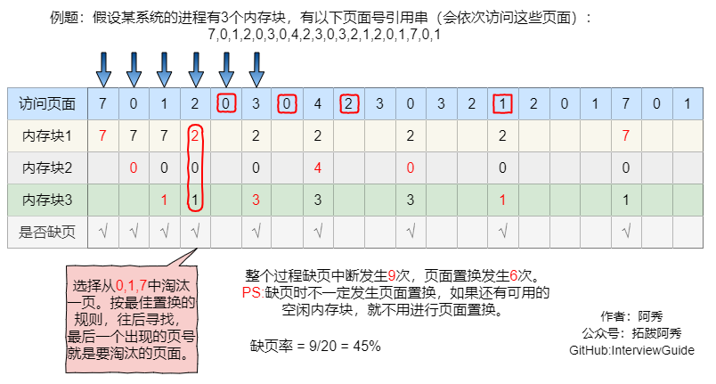
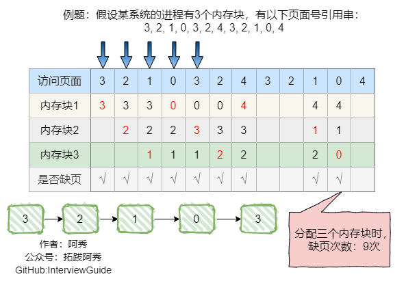
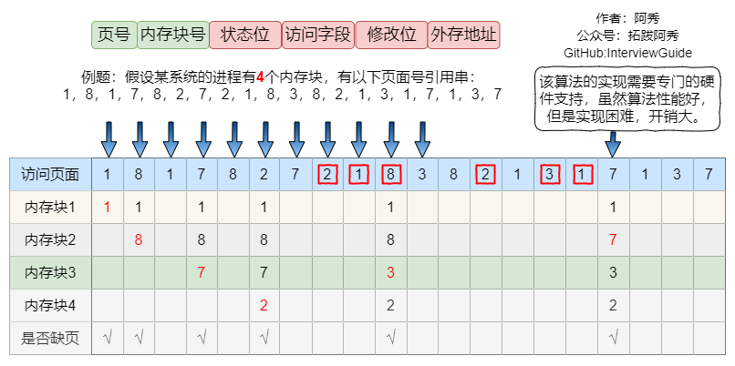
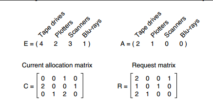
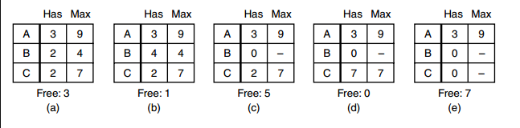
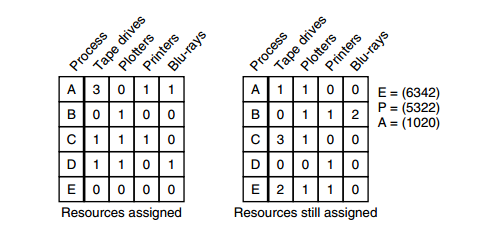

操作系统
这是六则或许对你有些许帮助的信息:
⭐️1、阿秀与朋友合作开发了一个编程资源网站，目前已经收录了很多不错的学习资源和黑科技（附带下载地址），如过你想要寻求合适的编程资源，欢迎体验以及推荐自己认为不错的资源，众人拾柴火焰高，我为人人，人人为我🔥！
2、👉23年5月份阿秀从字节跳动离职跳槽到某外企期间，为方便自己找工作，增加上岸几率，我自己从0开发了一个互联网中大厂面试真题解析网站，包括两个前端和一个后端。能够定向查看某些公司的某些岗位面试真题，比如我想查一下行业为互联网，公司为字节跳动，考察岗位为后端，考察时间为最近一年之类的面试题有哪些？
4、😍免费分享阿秀个人学习计算机以来收集到的免费学习资源，点此白嫖；也记录一下自己以前买过的不错的计算机书籍、网络专栏和垃圾付费专栏；也记录一下自己以前买过的不错的计算机书籍、网络专栏和垃圾付费专栏
5、🚀如果你想在校招中顺利拿到更好的offer，阿秀建议你多看看前人踩过的坑和留下的经验，事实上你现在遇到的大多数问题你的学长学姐师兄师姐基本都已经遇到过了。
6、🔥 欢迎准备计算机校招的小伙伴加入我的学习圈子，一个人踽踽独行不如一群人报团取暖，圈子里沉淀了很多过去21/22/23/24/25届学长学姐的经验和总结，好好跟着走下去的，最后基本都可以拿到不错的offer！如果你需要《阿秀的学习笔记》网站中📚︎校招八股文相关知识点的PDF版本的话，可以点此下载 。
41、Windows和Linux环境下内存分布情况

通过这张图你可以看到，用户空间内存，从低到高分别是 7 种不同的内存段：
- 程序文件段，包括二进制可执行代码；
- 已初始化数据段，包括静态常量；
- 未初始化数据段，包括未初始化的静态变量；
- 堆段，包括动态分配的内存，从低地址开始向上增长；
- 文件映射段，包括动态库、共享内存等，从低地址开始向上增长（跟硬件和内核版本有关）
- 栈段，包括局部变量和函数调用的上下文等。栈的大小是固定的，一般是
8 MB。当然系统也提供了参数，以便我们自定义大小；
42、一个由C/C++编译的程序占用的内存分为哪几个部分？
1、栈区（stack）— 地址向下增长，由编译器自动分配释放，存放函数的参数值，局部变量的值等。其操作方式类似于数据结构中的数据结构中的栈，先进后出。
2、堆区（heap）— 地址向上增长，一般由程序员分配释放，若程序员不释放，程序结束时可能由OS回收。注意它与数据结构中的堆是两回事，分配方式倒是类似于链表。
3、全局区（静态区）（static）—全局变量和静态变量的存储是放在一块的，初始化的全局变量和静态变量在一块区域，未初始化的全局变量和未初始化的静态变量在相邻的另一块区域。 - 程序结束后有系统释放
4、文字常量区 —常量字符串就是放在这里的。程序结束后由系统释放
5、程序代码区(text)—存放函数体的二进制代码。
43、一般情况下在Linux/windows平台下栈空间的大小
Linux环境下有操作系统决定，一般是8MB，8192KB，通过ulimit命令查看以及修改
Windows环境下由编译器决定，VC++6.0一般是1M
Linux
linux下非编译器决定栈大小，而是由操作系统环境决定，默认是8192KB（8M）；而在Windows平台下栈的大小是被记录在可执行文件中的（由编译器来设置)，即：windows下可以由编译器决定栈大小，而在Linux下是由系统环境变量来控制栈的大小的。
在Linux下通过如下命令可查看和设置栈的大小：
Windows
下程序栈空间的大小，VC++ 6.0 默认的栈空间是1M。
VC6.0中修改堆栈大小的方法：
- 选择 "Project->Setting"
- 选择 "Link"
- 选择 "Category"中的 "Output"
- 在 "Stack allocations"中的"Reserve:"中输栈的大小
感谢网友勘误：https://github.com/forthespada/InterviewGuide/issues/12，已经改正！-2021.09.03
44、程序从堆中动态分配内存时，虚拟内存上怎么操作的
页表：是一个存放在物理内存中的数据结构，它记录了虚拟页与物理页的映射关系
在进行动态内存分配时，例如malloc()函数或者其他高级语言中的new关键字，操作系统会在硬盘中创建或申请一段虚拟内存空间，并更新到页表（分配一个页表条目（PTE），使该PTE指向硬盘上这个新创建的虚拟页），通过PTE建立虚拟页和物理页的映射关系。
45、常见的几种磁盘调度算法
读写一个磁盘块的时间的影响因素有：
- 旋转时间（主轴转动盘面，使得磁头移动到适当的扇区上）
- 寻道时间（制动手臂移动，使得磁头移动到适当的磁道上）
- 实际的数据传输时间
其中，寻道时间最长，因此磁盘调度的主要目标是使磁盘的平均寻道时间最短。
1. 先来先服务
按照磁盘请求的顺序进行调度。
优点是公平和简单。缺点也很明显，因为未对寻道做任何优化，使平均寻道时间可能较长。
2. 最短寻道时间优先
优先调度与当前磁头所在磁道距离最近的磁道。
虽然平均寻道时间比较低，但是不够公平。如果新到达的磁道请求总是比一个在等待的磁道请求近，那么在等待的磁道请求会一直等待下去，也就是出现饥饿现象。具体来说，两端的磁道请求更容易出现饥饿现象。
3. 电梯扫描算法
电梯总是保持一个方向运行，直到该方向没有请求为止，然后改变运行方向。
电梯算法（扫描算法）和电梯的运行过程类似，总是按一个方向来进行磁盘调度，直到该方向上没有未完成的磁盘请求，然后改变方向。
因为考虑了移动方向，因此所有的磁盘请求都会被满足，解决了 SSTF 的饥饿问题。

46、交换空间与虚拟内存的关系
交换空间
Linux 中的交换空间（Swap space）在物理内存（RAM）被充满时被使用。如果系统需要更多的内存资源，而物理内存已经充满，内存中不活跃的页就会被移到交换空间去。
虽然交换空间可以为带有少量内存的机器提供帮助，但是这种方法不应该被当做是对内存的取代。交换空间位于硬盘驱动器上，它比进入物理内存要慢。
交换空间可以是一个专用的交换分区（推荐的方法），交换文件，或两者的组合。
交换空间的总大小应该相当于你的计算机内存的两倍和 32 MB这两个值中较大的一个，但是它不能超过 2048MB（2 GB）。
虚拟内存
虚拟内存是文件数据交叉链接的活动文件。是WINDOWS目录下的一个"WIN386.SWP"文件，这个文件会不断地扩大和自动缩小。
就速度方面而言,CPU的L1和L2缓存速度最快，内存次之，硬盘再次之。但是虚拟内存使用的是硬盘的空间，为什么我们要使用速度最慢的硬盘来做 为虚拟内存呢？
因为电脑中所有运行的程序都需要经过内存来执行，如果执行的程序很大或很多，就会导致我们只有可怜的256M/512M内存消耗殆尽，而硬盘空间动辄几十G上百G。
为了解决这个问题，Windows中运用了虚拟内存技术，即拿出一部分硬盘空间来充当内存使用。
47、抖动你知道是什么吗？它也叫颠簸现象
刚刚换出的页面马上又要换入内存，刚刚换入的页面马上又要换出外存，这种频繁的页面调度行为称为抖动，或颠簸。
产生抖动的主要原因是进程频繁访问的页面数目高于可用的物理块数(分配给进程的物理块不够)
为进程分配的物理块太少，会使进程发生抖动现象。为进程分配的物理块太多，又会降低系统整体的并发度，降低某些资源的利用率。
为了研究为应该为每个进程分配多少个物理块，Denning 提出了进程工作集” 的概念
48、从堆和栈上建立对象哪个快？（考察堆和栈的分配效率比较）
从两方面来考虑：
1、分配和释放，堆在分配和释放时都要调用函数（malloc,free)，比如分配时会到堆空间去寻找足够大小的空间（因为多次分配释放后会造成内存碎片），这些都会花费一定的时间。具体可以看看malloc和free的源代码，函数做了很多额外的工作，而栈却不需要这些。
2、访问时间，访问堆的一个具体单元，需要两次访问内存，第一次得取得指针，第二次才是真正的数据，而栈只需访问一次。另外，堆的内容被操作系统交换到外存的概率比栈大，栈一般是不会被交换出去的。
49、常见内存分配方式有哪些？
内存分配方式
（1） 从静态存储区域分配。内存在程序编译的时候就已经分配好，这块内存在程序的整个运行期间都存在。例如全局变量，static变量。
（2） 在栈上创建。在执行函数时，函数内局部变量的存储单元都可以在栈上创建，函数执行结束时这些存储单元自动被释放。栈内存分配运算内置于处理器的指令集中，效率很高，但是分配的内存容量有限。
（3） 从堆上分配，亦称动态内存分配。程序在运行的时候用malloc或new申请任意多少的内存，程序员自己负责在何时用free或delete释放内存。动态内存的生存期由我们决定，使用非常灵活，但问题也最多。
50、常见内存分配内存错误
（1）内存分配未成功，却使用了它。
编程新手常犯这种错误，因为他们没有意识到内存分配会不成功。常用解决办法是，在使用内存之前检查指针是否为NULL。如果指针p是函数的参数，那么在函数的入口处用assert(p!=NULL)进行检查。如果是用malloc或new来申请内存，应该用if(p==NULL) 或if(p!=NULL)进行防错处理。
（2）内存分配虽然成功，但是尚未初始化就引用它。
犯这种错误主要有两个起因：一是没有初始化的观念；二是误以为内存的缺省初值全为零，导致引用初值错误（例如数组）。内存的缺省初值究竟是什么并没有统一的标准，尽管有些时候为零值，我们宁可信其无不可信其有。所以无论用何种方式创建数组，都别忘了赋初值，即便是赋零值也不可省略，不要嫌麻烦。
（3）内存分配成功并且已经初始化，但操作越过了内存的边界。
例如在使用数组时经常发生下标“多1”或者“少1”的操作。特别是在for循环语句中，循环次数很容易搞错，导致数组操作越界。
（4）忘记了释放内存，造成内存泄露。
含有这种错误的函数每被调用一次就丢失一块内存。刚开始时系统的内存充足，你看不到错误。终有一次程序突然挂掉，系统出现提示：内存耗尽。动态内存的申请与释放必须配对，程序中malloc与free的使用次数一定要相同，否则肯定有错误（new/delete同理）。
（5）释放了内存却继续使用它。常见于以下有三种情况：
-
程序中的对象调用关系过于复杂，实在难以搞清楚某个对象究竟是否已经释放了内存，此时应该重新设计数据结构，从根本上解决对象管理的混乱局面。
-
函数的return语句写错了，注意不要返回指向“栈内存”的“指针”或者“引用”，因为该内存在函数体结束时被自动销毁。
-
使用free或delete释放了内存后，没有将指针设置为NULL。导致产生“空悬指针”。
51、内存交换中，被换出的进程保存在哪里？
保存在磁盘中，也就是外存中。具有对换功能的操作系统中，通常把磁盘空间分为文件区和对换区两部分。
文件区主要用于存放文件，主要追求存储空间的利用率，因此对文件区空间的管理采用离散分配方式;对换区空间只占磁盘空间的小部分，被换出的进程数据就存放在对换区。
由于对换的速度直接影响到系统的整体速度，因此对换区空间的管理主要追求换入换出速度，因此通常对换区采用连续分配方式(学过文件管理章节后即可理解)。
总之，对换区的I/O速度比文件区的更快。
52、在发生内存交换时，有些进程是被优先考虑的？你可以说一说吗？
可优先换出阻塞进程;可换出优先级低的进程;为了防止优先级低的进程在被调入内存后很快又被换出，有的系统还会考虑进程在内存的驻留时间… (注意: PCB 会常驻内存，不会被换出外存)
53、ASCII、Unicode和UTF-8编码的区别？
ASCII
ASCII 只有127个字符，表示英文字母的大小写、数字和一些符号，但由于其他语言用ASCII 编码表示字节不够。
例如：常用中文需要两个字节，且不能和ASCII冲突，中国定制了GB2312编码格式，相同的，其他国家的语言也有属于自己的编码格式。
Unicode
由于每个国家的语言都有属于自己的编码格式，在多语言编辑文本中会出现乱码，这样Unicode应运而生，Unicode就是将这些语言统一到一套编码格式中。
通常两个字节表示一个字符，而ASCII是一个字节表示一个字符，这样如果你编译的文本是全英文的，用Unicode编码比ASCII编码需要多一倍的存储空间，在存储和传输上就十分不划算。
UTF-8
为了解决上述问题，又出现了把Unicode编码转化为“可变长编码”UTF-8编码，UTF-8编码将Unicode字符按数字大小编码为1-6个字节，英文字母被编码成一个字节，常用汉字被编码成三个字节。
如果你编译的文本是纯英文的，那么用UTF-8就会非常节省空间，并且ASCII码也是UTF-8的一部分。
三者之间的联系
搞清楚了ASCII、Unicode和UTF-8的关系，我们就可以总结一下现在计算机系统通用的字符编码工作方式：
(1) 在计算机内存中，统一使用Unicode编码，当需要保存到硬盘或者需要传输的时候，就转换为UTF-8编码
(2)用记事本编辑的时候，从文件读取的UTF-8字符被转换为Unicode字符到内存里，编辑完成后，保存的时候再把Unicode转换为UTF-8保存到文件。如下图（截取他人图片）
浏览网页的时候，服务器会把动态生成的Unicode内容转换为UTF-8再传输到浏览器：
54、原子操作的是如何实现的
处理器使用基于对缓存加锁或总线加锁的方式来实现多处理器之间的原子操作。
首先处理器会自动保证基本的内存操作的原子性。处理器保证从系统内存中读取或者写入一个字节是原子的，意思是当一个处理器读取一个字节时，其他处理器不能访问这个字节的内存地址。
Pentium 6和最新的处理器能自动保证单处理器对同一个缓存行里进行16/32/64位的操作是原子的，但是复杂的内存操作处理器是不能自动保证其原子性的，比如跨总线宽度、跨多个缓存行和跨页表的访问。但是，处理器提供总线锁定和缓存锁定两个机制来保证复杂内存操作的原子性。
（1）使用总线锁保证原子性
第一个机制是通过总线锁保证原子性。
如果多个处理器同时对共享变量进行读改写操作（i++就是经典的读改写操作），那么共享变量就会被多个处理器同时进行操作，这样读改写操作就不是原子的，操作完之后共享变量的值会和期望的不一致。
举个例子，如果i=1，我们进行两次i++操作，我们期望的结果是3，但是有可能结果是2，如图下图所示。
原因可能是多个处理器同时从各自的缓存中读取变量i，分别进行加1操作，然后分别写入系统内存中。
那么，想要保证读改写共享变量的操作是原子的，就必须保证CPU1读改写共享变量的时候，CPU2不能操作缓存了该共享变量内存地址的缓存。
处理器使用总线锁就是来解决这个问题的。所谓总线锁就是使用处理器提供的一个LOCK＃信号，当一个处理器在总线上输出此信号时，其他处理器的请求将被阻塞住，那么该处理器可以独占共享内存。
（2）使用缓存锁保证原子性
第二个机制是通过缓存锁定来保证原子性。在同一时刻，我们只需保证对某个内存地址的操作是原子性即可，但总线锁定把CPU和内存之间的通信锁住了。
这使得锁定期间，其他处理器不能操作其他内存地址的数据，所以总线锁定的开销比较大。目前处理器在某些场合下使用缓存锁定代替总线锁定来进行优化。
频繁使用的内存会缓存在处理器的L1、L2和L3高速缓存里，那么原子操作就可以直接在处理器内部缓存中进行，并不需要声明总线锁，在Pentium 6和目前的处理器中可以使用“缓存锁定”的方式来实现复杂的原子性。
所谓“缓存锁定”是指内存区域如果被缓存在处理器的缓存行中，并且在Lock操作期间被锁定，那么当它执行锁操作回写到内存时，处理器不在总线上声言LOCK＃信号，而是修改内部的内存地址，并允许它的缓存一致性机制来保证操作的原子性。
因为缓存一致性机制会阻止同时修改由两个以上处理器缓存的内存区域数据，当其他处理器回写已被锁定的缓存行的数据时，会使缓存行无效，在如上图所示的例子中，当CPU1修改缓存行中的i时使用了缓存锁定，那么CPU2就不能使用同时缓存i的缓存行。
但是有两种情况下处理器不会使用缓存锁定。
- 第一种情况是：当操作的数据不能被缓存在处理器内部，或操作的数据跨多个缓存行（cache line）时，则处理器会调用总线锁定。
- 第二种情况是：有些处理器不支持缓存锁定。对于Intel 486和Pentium处理器，就算锁定的内存区域在处理器的缓存行中也会调用总线锁定。
55、内存交换你知道有哪些需要注意的关键点吗？
- 交换需要备份存储，通常是快速磁盘，它必须足够大，并且提供对这些内存映像的直接访问。
- 为了有效使用CPU，需要每个进程的执行时间比交换时间长，而影响交换时间的主要是转移时间，转移时间与所交换的空间内存成正比。
- 如果换出进程，比如确保该进程的内存空间成正比。
- 交换空间通常作为磁盘的一整块，且独立于文件系统，因此使用就可能很快。
- 交换通常在有许多进程运行且内存空间吃紧时开始启动，而系统负荷降低就暂停。
- 普通交换使用不多，但交换的策略的某些变种在许多系统中（如UNIX系统）仍然发挥作用。
56、系统并发和并行，分得清吗？
并发是指宏观上在一段时间内能同时运行多个程序，而并行则指同一时刻能运行多个指令。
并行需要硬件支持，如多流水线、多核处理器或者分布式计算系统。
操作系统通过引入进程和线程，使得程序能够并发运行。
57、可能是最全的页面置换算法总结了
1、最佳置换法(OPT)
最佳置换算法(OPT，Optimal) :每次选择淘汰的页面将是以后永不使用，或者在最长时间内不再被访问的页面，这样可以保证最低的缺页率。 
最佳置换算法可以保证最低的缺页率，但实际上，只有在进程执行的过程中才能知道接下来会访问到的是哪个页面。操作系统无法提前预判页面访问序列。因此，最佳置换算法是无法实现的
2、先进先出置换算法(FIFO)
先进先出置换算法(FIFO) :每次选择淘汰的页面是最早进入内存的页面 实现方法:把调入内存的页面根据调入的先后顺序排成一个队列，需要换出页面时选择队头页面队列的最大长度取决于系统为进程分配了多少个内存块。 
Belady异常—当为进程分配的物理块数增大时，缺页次数不减反增的异常现象。只有FIFO算法会产生Belady异常，而LRU和OPT算法永远不会出现Belady异常。
另外，FIFO算法虽然实现简单，但是该算法与进程实际运行时的规律不适应，因为先进入的页面也有可能最经常被访问。因此，算法性能差。
FIFO的性能较差，因为较早调入的页往往是经常被访问的页，这些页在FIFO算法下被反复调入和调出，并且有Belady现象。
所谓Belady现象是指：采用FIFO算法时，如果对—个进程未分配它所要求的全部页面，有时就会出现分配的页面数增多但缺页率反而提高的异常现象。
3、最近最久未使用置换算法(LRU)
最近最久未使用置换算法(LRU，least recently used) :每次淘汰的页面是最近最久未使用的页面。
实现方法:赋予每个页面对应的页表项中，用访问字段记录该页面自上次被访问以来所经历的时间t(该算法的实现需要专门的硬件支持，虽然算法性能好，但是实现困难，开销大)。
当需要淘汰一个页面时，选择现有页面中t值最大的，即最近最久未使用的页面。
LRU性能较好，但需要寄存器和栈的硬件支持。LRU是堆栈类算法，理论上可以证明，堆栈类算法不可能出现Belady异常。

在手动做题时，若需要淘汰页面，可以逆向检查此时在内存中的几个页面号。在逆向扫描过程中最后一个出现的页号就是要淘汰的页面。
4、时钟置换算法(CLOCK)
最佳置换算法性OPT能最好，但无法实现；先进先出置换算法实现简单，但算法性能差；最近最久未使用置换算法性能好，是最接近OPT算法性能的，但是实现起来需要专门的硬件支持，算法开销大。
所以操作系统的设计者尝试了很多算法，试图用比较小的开销接近LRU的性能，这类算法都是CLOCK算法的变体，因为算法要循环扫描缓冲区像时钟一样转动。所以叫clock算法。
时钟置换算法是一种性能和开销较均衡的算法，又称CLOCK算法，或最近未用算法(NRU，Not Recently Used)
简单的CLOCK算法实现方法:为每个页面设置一个访问位，再将内存中的页面都通过链接指针链接成一个循环队列。当某页被访问时，其访问位置为1。
当需要淘汰-一个页面时，只需检查页的访问位。如果是0，就选择该页换出;如果是1，则将它置为0，暂不换出，继续检查下一个页面，若第- - ~轮扫描中所有页面都是1，则将这些页面的访问位依次置为0后，再进行第二轮扫描(第二轮扫描中一定会有访问位为0的页面，因此简单的CLOCK算法选择–个淘汰页面最多会经过两轮扫描)
5、改进型的时钟置换算法
简单的时钟置换算法仅考虑到一个页面最近是否被访问过。事实上，如果被淘汰的页面没有被修改过,就不需要执行I/O操作写回外存。只有被淘汰的页面被修改过时，才需要写回外存。
因此，除了考虑一个页面最近有没有被访问过之外，操作系统还应考虑页面有没有被修改过。在其他条件都相同时，应优先淘汰没有修改过的页面，避免I/O操作。这就是改进型的时钟置换算法的思想。修改位=0，表示页面没有被修改过;修改位=1，表示页面被修改过。
为方便讨论，用(访问位，修改位)的形式表示各页面状态。如(1, 1)表示一个页面近期被访问过，且被修改过。
改进型的Clock算法需要综合考虑某一内存页面的访问位和修改位来判断是否置换该页面。在实际编写算法过程中，同样可以用一个等长的整型数组来标识每个内存块的修改状态。访问位A和修改位M可以组成一下四种类型的页面。
算法规则:将所有可能被置换的页面排成–个循环队列
第一轮:从当前位置开始扫描到第一个(A =0, M = 0)的帧用于替换。表示该页面最近既未被访问，又未被修改，是最佳淘汰页 第二轮:若第一轮扫描失败，则重新扫描，查找第一个(A =1, M = 0)的帧用于替换。本轮将所有扫描过的帧访问位设为0。表示该页面最近未被访问，但已被修改，并不是很好的淘汰页。 第三轮:若第二轮扫描失败，则重新扫描，查找第一个(A =0, M = 1)的帧用于替换。本轮扫描不修改任何标志位。表示该页面最近已被访问，但未被修改，该页有可能再被访问。 第四轮:若第三轮扫描失败，则重新扫描，查找第一个A =1, M = 1)的帧用于替换。表示该页最近已被访问且被修改，该页可能再被访问。
由于第二轮已将所有帧的访问位设为0，因此经过第三轮、第四轮扫描一定会有一个帧被选中，因此改进型CLOCK置换算法选择- -个淘汰页面最多会进行四轮扫描
算法规则：将所有可能被置换的页面排成一个循环队列。
第一轮:从当前位置开始扫描到第-一个(0, 0)的帧用于替换。本轮扫描不修改任何标志位。(第一优先级:最近没访问，且没修改的页面)
第二轮:若第一轮扫描失败，则重新扫描，查找第一个(0, 1)的帧用于替换。本轮将所有扫描过的帧访问位设为0 (第二优先级: 最近没访问，但修改过的页面)
第三轮:若第二轮扫描失败，则重新扫描，查找第一个(0, 0)的帧用于替换。本轮扫描不修改任何标志位(第三优先级:最近访问过，但没修改的页面)
第四轮:若第三轮扫描失败，则重新扫描，查找第一个(0, 1)的帧用于替换。(第四优先级:最近访问过，且修改过的页面)
由于第二轮已将所有帧的访问位设为0，因此经过第三轮、第四轮扫描一定会有一个帧被选中，因此改进型CLOCK置换算法选择一个淘汰页面最多会进行四轮扫描
6、总结
| 算法规则 | 优缺点 | |
|---|---|---|
| OPT | 优先淘汰最长时间内不会被访问的页面 | 缺页率最小，性能最好;但无法实现 |
| FIFO | 优先淘汰最先进入内存的页面 | 实现简单;但性能很差，可能出现Belady异常 |
| LRU | 优先淘汰最近最久没访问的页面 | 性能很好;但需要硬件支持，算法开销大 |
| CLOCK (NRU) | 循环扫描各页面。第一轮淘汰访问位=0的，并将扫描过的页面访问位改为1。若第一轮没选中，则进行第二轮扫描。 | 实现简单，算法开销小;但未考虑页面是否被修改过。 |
| 改进型CLOCK (改进型NRU) | 若用(访问位，修改位)的形式表述，则 第一轮:淘汰(0,0) 第二轮:淘汰(O,1)，并将扫描过的页面访问位都置为0 第三轮:淘汰(O, 0) 第四轮:淘汰(0, 1) | 算法开销较小，性能也不错 |
58、共享是什么？
共享是指系统中的资源可以被多个并发进程共同使用。
有两种共享方式：互斥共享和同时共享。
互斥共享的资源称为临界资源，例如打印机等，在同一时刻只允许一个进程访问，需要用同步机制来实现互斥访问。
59、死锁相关问题大总结，超全！
死锁是指两个（多个）线程相互等待对方数据的过程，死锁的产生会导致程序卡死，不解锁程序将永远无法进行下去。
1、死锁产生原因
举个例子：两个线程A和B，两个数据1和2。线程A在执行过程中，首先对资源1加锁，然后再去给资源2加锁，但是由于线程的切换，导致线程A没能给资源2加锁。
线程切换到B后，线程B先对资源2加锁，然后再去给资源1加锁，由于资源1已经被线程A加锁，因此线程B无法加锁成功，当线程切换为A时，A也无法成功对资源2加锁，由此就造成了线程AB双方相互对一个已加锁资源的等待，死锁产生。
理论上认为死锁产生有以下四个必要条件，缺一不可：
-
互斥条件：进程对所需求的资源具有排他性，若有其他进程请求该资源，请求进程只能等待。
-
不剥夺条件：进程在所获得的资源未释放前，不能被其他进程强行夺走，只能自己释放。
- 请求和保持条件：进程当前所拥有的资源在进程请求其他新资源时，由该进程继续占有。
- 循环等待条件：存在一种进程资源循环等待链，链中每个进程已获得的资源同时被链中下一个进程所请求。
2、死锁演示
通过代码的形式进行演示，需要两个线程和两个互斥量。
语句1和语句2表示线程A先锁资源1，再锁资源2，语句3和语句4表示线程B先锁资源2再锁资源1，具备死锁产生的条件。
3、死锁的解决方案
保证上锁的顺序一致。
4、死锁必要条件
- 互斥条件：进程对所需求的资源具有排他性，若有其他进程请求该资源，请求进程只能等待。
- 不剥夺条件：进程在所获得的资源未释放前，不能被其他进程强行夺走，只能自己释放
- 请求和保持条件：进程当前所拥有的资源在进程请求其他新资源时，由该进程继续占有。
- 循环等待条件：存在一种进程资源循环等待链，链中每个进程已获得的资源同时被链中下一个进程所请求。
5、处理方法
主要有以下四种方法：
- 鸵鸟策略
- 死锁检测与死锁恢复
- 死锁预防
- 死锁避免
鸵鸟策略
把头埋在沙子里，假装根本没发生问题。
因为解决死锁问题的代价很高，因此鸵鸟策略这种不采取任务措施的方案会获得更高的性能。
当发生死锁时不会对用户造成多大影响，或发生死锁的概率很低，可以采用鸵鸟策略。
大多数操作系统，包括 Unix，Linux 和 Windows，处理死锁问题的办法仅仅是忽略它。
死锁检测与死锁恢复
不试图阻止死锁，而是当检测到死锁发生时，采取措施进行恢复。
1、每种类型一个资源的死锁检测

上图为资源分配图，其中方框表示资源，圆圈表示进程。资源指向进程表示该资源已经分配给该进程，进程指向资源表示进程请求获取该资源。
图 a 可以抽取出环，如图 b，它满足了环路等待条件，因此会发生死锁。
每种类型一个资源的死锁检测算法是通过检测有向图是否存在环来实现，从一个节点出发进行深度优先搜索，对访问过的节点进行标记，如果访问了已经标记的节点，就表示有向图存在环，也就是检测到死锁的发生。
2、每种类型多个资源的死锁检测

上图中，有三个进程四个资源，每个数据代表的含义如下：
- E 向量：资源总量
- A 向量：资源剩余量
- C 矩阵：每个进程所拥有的资源数量，每一行都代表一个进程拥有资源的数量
- R 矩阵：每个进程请求的资源数量
进程 P1 和 P2 所请求的资源都得不到满足，只有进程 P3 可以，让 P3 执行，之后释放 P3 拥有的资源，此时 A = (2 2 2 0)。P2 可以执行，执行后释放 P2 拥有的资源，A = (4 2 2 1) 。P1 也可以执行。所有进程都可以顺利执行，没有死锁。
算法总结如下：
每个进程最开始时都不被标记，执行过程有可能被标记。当算法结束时，任何没有被标记的进程都是死锁进程。
- 寻找一个没有标记的进程 Pi，它所请求的资源小于等于 A。
- 如果找到了这样一个进程，那么将 C 矩阵的第 i 行向量加到 A 中，标记该进程，并转回 1。
- 如果没有这样一个进程，算法终止。
6、死锁恢复
- 利用抢占恢复
- 利用回滚恢复
- 通过杀死进程恢复
7、死锁预防
在程序运行之前预防发生死锁。
- 破坏互斥条件
例如假脱机打印机技术允许若干个进程同时输出，唯一真正请求物理打印机的进程是打印机守护进程。
- 破坏请求和保持条件
一种实现方式是规定所有进程在开始执行前请求所需要的全部资源。
- 破坏不剥夺条件
允许抢占资源
- 破坏循环请求等待
给资源统一编号，进程只能按编号顺序来请求资源。
8、死锁避免
在程序运行时避免发生死锁。
-
安全状态

图 a 的第二列 Has 表示已拥有的资源数，第三列 Max 表示总共需要的资源数，Free 表示还有可以使用的资源数。
从图 a 开始出发，先让 B 拥有所需的所有资源（图 b），运行结束后释放 B，此时 Free 变为 5（图 c）；接着以同样的方式运行 C 和 A，使得所有进程都能成功运行，因此可以称图 a 所示的状态时安全的。
定义：如果没有死锁发生，并且即使所有进程突然请求对资源的最大需求，也仍然存在某种调度次序能够使得每一个进程运行完毕，则称该状态是安全的。
安全状态的检测与死锁的检测类似，因为安全状态必须要求不能发生死锁。下面的银行家算法与死锁检测算法非常类似，可以结合着做参考对比。
-
单个资源的银行家算法
一个小城镇的银行家，他向一群客户分别承诺了一定的贷款额度，算法要做的是判断对请求的满足是否会进入不安全状态，如果是，就拒绝请求；否则予以分配。

上图 c 为不安全状态，因此算法会拒绝之前的请求，从而避免进入图 c 中的状态。
-
多个资源的银行家算法

上图中有五个进程，四个资源。
左边的图表示已经分配的资源，右边的图表示还需要分配的资源。最右边的 E、P 以及 A 分别表示：总资源、已分配资源以及可用资源，注意这三个为向量，而不是具体数值，例如 A=(1020)，表示 4 个资源分别还剩下 1/0/2/0。
4、检查一个状态是否安全的算法如下：
- 查找右边的矩阵是否存在一行小于等于向量 A。如果不存在这样的行，那么系统将会发生死锁，状态是不安全的。
- 假若找到这样一行，将该进程标记为终止，并将其已分配资源加到 A 中。
- 重复以上两步，直到所有进程都标记为终止，则状态时安全的。
如果一个状态不是安全的，需要拒绝进入这个状态。
60、为什么分段式存储管理有外部碎片而无内部碎片？为什么固定分区分配有内部碎片而不会有外部碎片？
分段式分配是按需分配，而固定式分配是固定分配的方式。